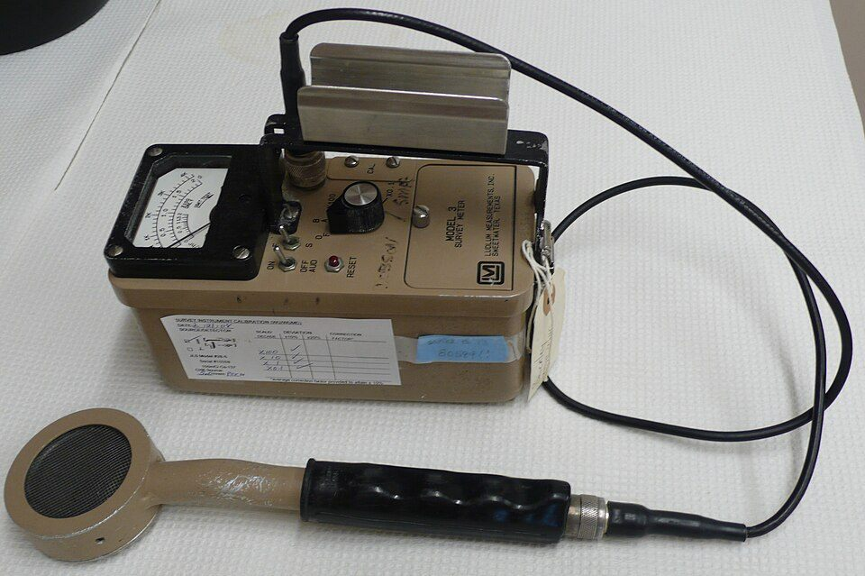

O que estudei
- Radiação e seus efeitos na comunidade
Radiação é energia que se propaga pelo espaço. Ela pode ser não ionizante, como a luz visível, as ondas de rádio e o Wi-Fi, ou ionizante, como os raios X e a radiação de materiais radioativos. A ionizante tem energia suficiente para alterar átomos e células, por isso exige cuidado, medição e controle.
A radiação está presente em muitas situações do dia a dia: o sol emite radiação ultravioleta (por isso usamos protetor solar), os aparelhos de raio X permitem ver os ossos, e as usinas nucleares geram energia a partir de materiais radioativos. Em todos esses casos, o importante é a dose e o tempo de exposição.
Para medir a radiação ionizante, usa-se o contador Geiger, que detecta as partículas e emite um som a cada detecção. É um exemplo de sensor, assim como os que usamos no curso técnico.
Atividades e trabalhos
- Atividade: Radiação e decisões na comunidade
A atividade discutiu como uma comunidade pode tomar decisões sobre o uso da radiação. Ela está presente em exames médicos, na geração de energia e em equipamentos, e cada uso tem benefícios e riscos que precisam ser comparados.
A atividade mostrou que decisões sobre radiação (instalar uma antena, construir uma usina, usar exames de imagem) precisam de informação científica confiável, e não de boatos. Também discutimos as regras de segurança e a importância da fiscalização.
Evidências da aprendizagem
A atividade foi entregue na plataforma de tarefas do Senac.
Minha reflexão
A Física se conecta direto com o curso de IoT: os dispositivos que usamos, como o ESP32, se comunicam por Wi-Fi e Bluetooth, que são radiação eletromagnética não ionizante.
Também percebi que muito do que fazemos com eletrônica, como ligar LEDs, ler sensores e alimentar circuitos, depende de conceitos de Física, como tensão, corrente e energia.